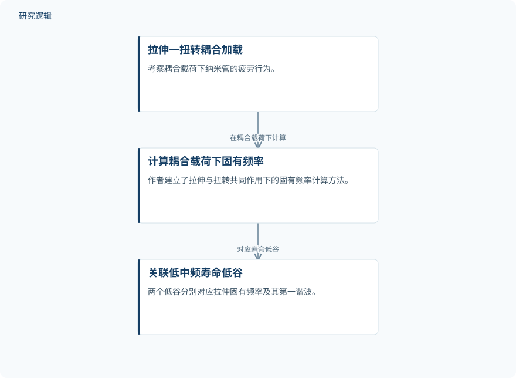

摘要解读
单壁二硫化钼纳米管双轴拉伸—扭转耦合疲劳共振
Biaxial tension-torsion coupling fatigue resonance of single-walled MoS2 nanotubes.
解读更新 2026-10-29 13:22 · 依据公开摘要整理，未核验全文细节
拉伸与扭转共同作用时，纳米管的疲劳寿命为何会在某些激励频率附近出现低谷？这项研究将寿命变化与固有频率、谐波及应变率效应联系起来，为理解纳米管器件的疲劳可靠性提供线索。
文章目录
拉伸—扭转耦合下，寿命如何随频率变化
纳米管的疲劳特性关系到纳米管器件的服役寿命。本研究关注双轴拉伸—扭转耦合载荷下的疲劳行为，考察扭转角度、轴向激励频率与疲劳寿命的关系。值得关注的不只是寿命随频率升高而缩短的总体趋势，还有其中并不单调的局部变化。
计算耦合载荷下的固有频率
摘要明确介绍，作者建立了拉伸与扭转共同作用下的固有频率计算方法，并将计算得到的频率与疲劳寿命低谷相联系。摘要还报告了疲劳能量在激励频率和固有频率处的分布与耗散，但未交代具体计算流程、能量分析方法或疲劳寿命的判定标准。
依据摘要整理的频率—寿命关联示意


仅概括摘要明确陈述的耦合加载、固有频率计算及寿命低谷关联，不是论文原图，也不表示完整实验流程。
下载 SVG图示关系说明
实线表示相邻阶段的信息流，虚线表示跨阶段联系或反馈。
拉伸—扭转耦合加载 → 计算耦合载荷下固有频率：在耦合载荷下计算；计算耦合载荷下固有频率 → 关联低中频寿命低谷：对应寿命低谷
低中频的两个低谷，与高频宽平台不同
结果显示，扭转角度增大、轴向激励频率升高时，疲劳寿命总体下降。不过，在所有考察的扭转角度下，寿命随激励频率的变化都不是单调下降：低至中频范围内出现两个明显低谷，分别对应拉伸固有频率及其第一谐波。
进入高频范围后，疲劳寿命迅速降至一个较宽的最低值平台。作者将这一平台归因于应变率效应，而不是尖锐的谐波共振。因此，摘要对低中频低谷和高频平台给出了不同的机制解释，不能将两者一概视为同一种共振现象。
在能量层面，摘要报告疲劳能量分布并耗散于激励频率和固有频率处。当激励频率与固有频率匹配时，作者将寿命最低值归因于大部分固有频率声子的耗散。这提供了理解疲劳共振的能量视角，但摘要没有展开这一解释的详细证据。
摘要尚不能界定结果的适用范围
仅凭当前摘要，无法判断研究对象的样本规模、几何尺寸、边界条件、载荷参数范围，以及是否设置其他加载方式作为比较；也无法判断固有频率计算与机制解释经过了哪些独立验证。这些属于摘要未交代的信息，不代表论文没有开展相关工作。器件寿命改善在此是应用指向，不能视为已经验证的效果。
阅读启发：区分共振低谷与应变率平台
阅读启发：进一步阅读时，可重点关注固有频率如何随耦合载荷变化、寿命低谷与频率匹配的证据，以及作者如何区分共振效应和应变率效应。对疲劳可靠性而言，本文提示值得关注激励频率与结构固有频率的相对关系，但尚不能据此直接给出器件的安全工作频段。
以上为本站阅读启发与建议，不是论文已验证的结论。